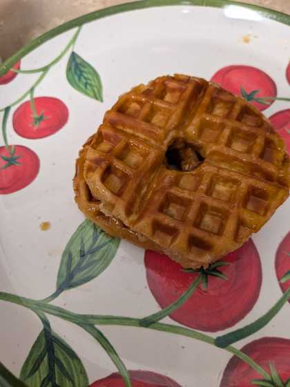
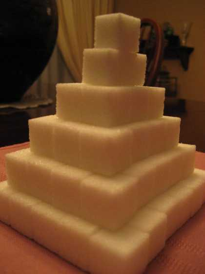
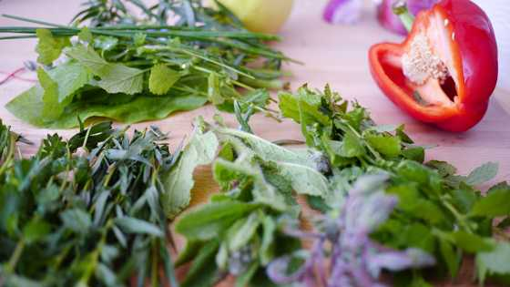
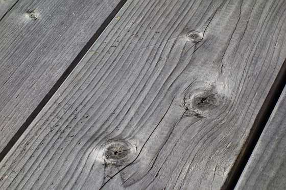
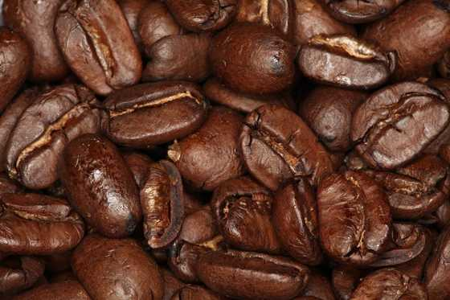
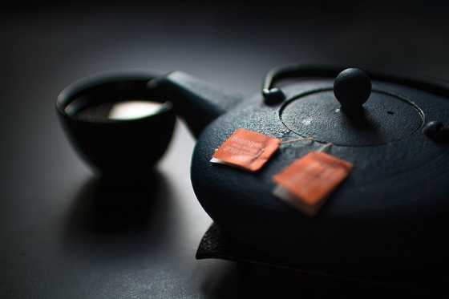
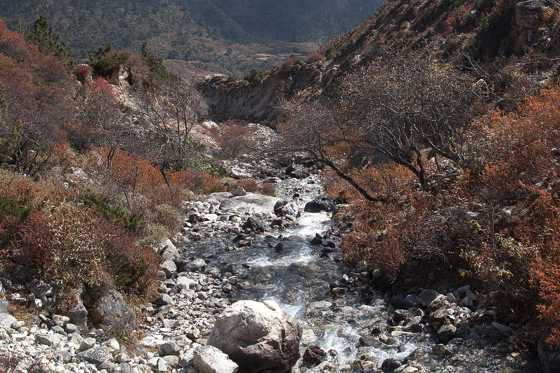
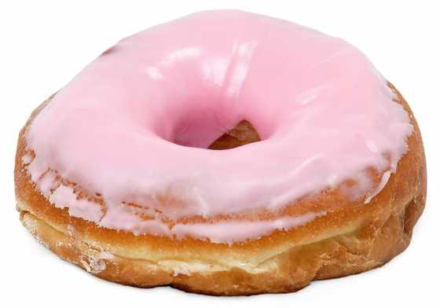

定番のドーナツ
生地の味を楽しむ「そのまま」など。
価格 準備中愛媛県内子町・中山川のそば
つぶらかドーナツは、「日常に寄り添う素朴系ドーナツ」のお店。大切な人に食べさせたい、卵・乳・白砂糖を使わないやさしいおやつを、川沿いの倉庫でお待ちしています。

ABOUT
店主の西側亜希子さんは、横浜市出身。内子町へ移住して「丘の上の日曜市」に出店したことをきっかけに、2015年ごろからイベントでドーナツ「おいとはん」を作ってきました。その味を引き継ぎ、2025年6月14日、内子町立山に固定店舗「つぶらかドーナツ」を開きました。
若い頃から持ち続けた「自分のお店を持ちたい」という夢。娘さんに「大人が夢を叶える姿を見せたい」という想いも、お店づくりの背中を押したと、町の移住者インタビューで語られています。
目指すのは、映える特別なスイーツではなく「日常のおやつ」。おやつと自然の中でゆったり過ごせる隠れ家のような場所にしたい、とのことです。

※「つぶらか」という店名の意味は、確認できた記事には書かれていませんでした。このページの写真はすべてフリー素材のイメージで、実際のお店・商品の様子ではありません。
MENU
紹介記事によると、定番は「そのまま」「きび糖」「ココア」など。「ほうじ茶」「レモン」など、旬の素材を使った期間限定も登場するそうです。内容は変わることがあるため、最新情報はInstagramをご覧ください。
生地の味を楽しむ「そのまま」など。
価格 準備中
サトウキビの自然な甘さ。
価格 準備中
愛媛の旬の素材を使った期間限定。
価格 準備中
店主が選んだ豆のコーヒー。
価格 準備中
数種類を配合した「つぶらかブレンド」など。
価格 準備中
西予市明浜産のジュースなど。
価格 準備中





※写真はフリー素材のイメージです。実際の商品・内容とは異なります。メニュー・価格の詳細は準備中です。
VOICE
子どもに食べさせても安心できるのがうれしい。素朴で、毎日でも食べたくなるやさしい味でした。
ご来店のお客様(想定)川を眺めながらのイートインが心地よく、ついゆっくりしてしまいました。コーヒーとよく合います。
ご来店のお客様(想定)倉庫を改装した店内の雰囲気が素敵。電車で行く週末のお出かけ先にぴったりです。
ご来店のお客様(想定)※口コミは制作側が用意したイメージ例で、実在のお客様の声ではありません。
ACCESS
このページの写真はフリー素材のイメージで、店舗の実際の様子ではありません。縮小・切り抜きの加工があります。